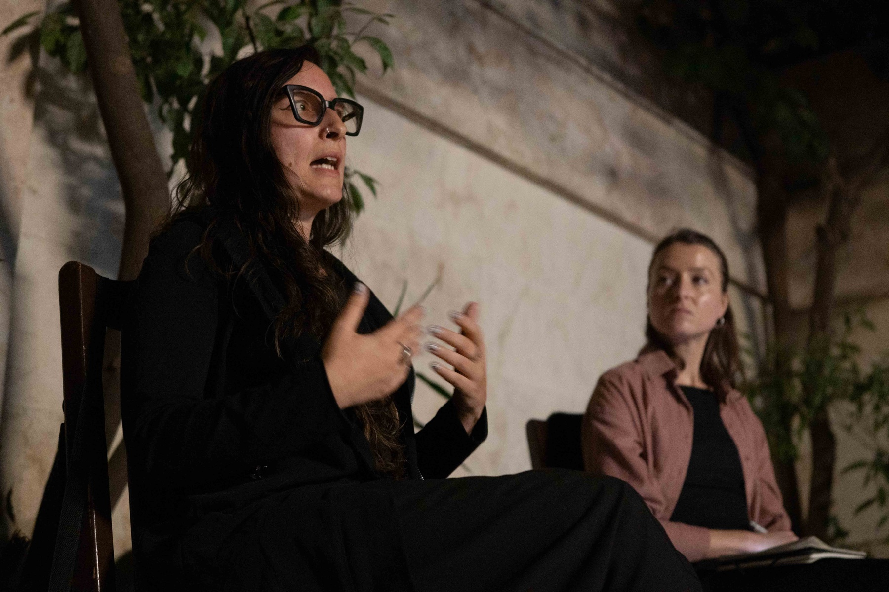
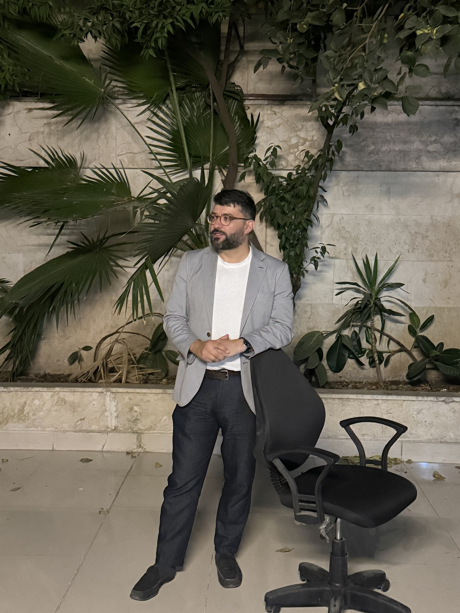
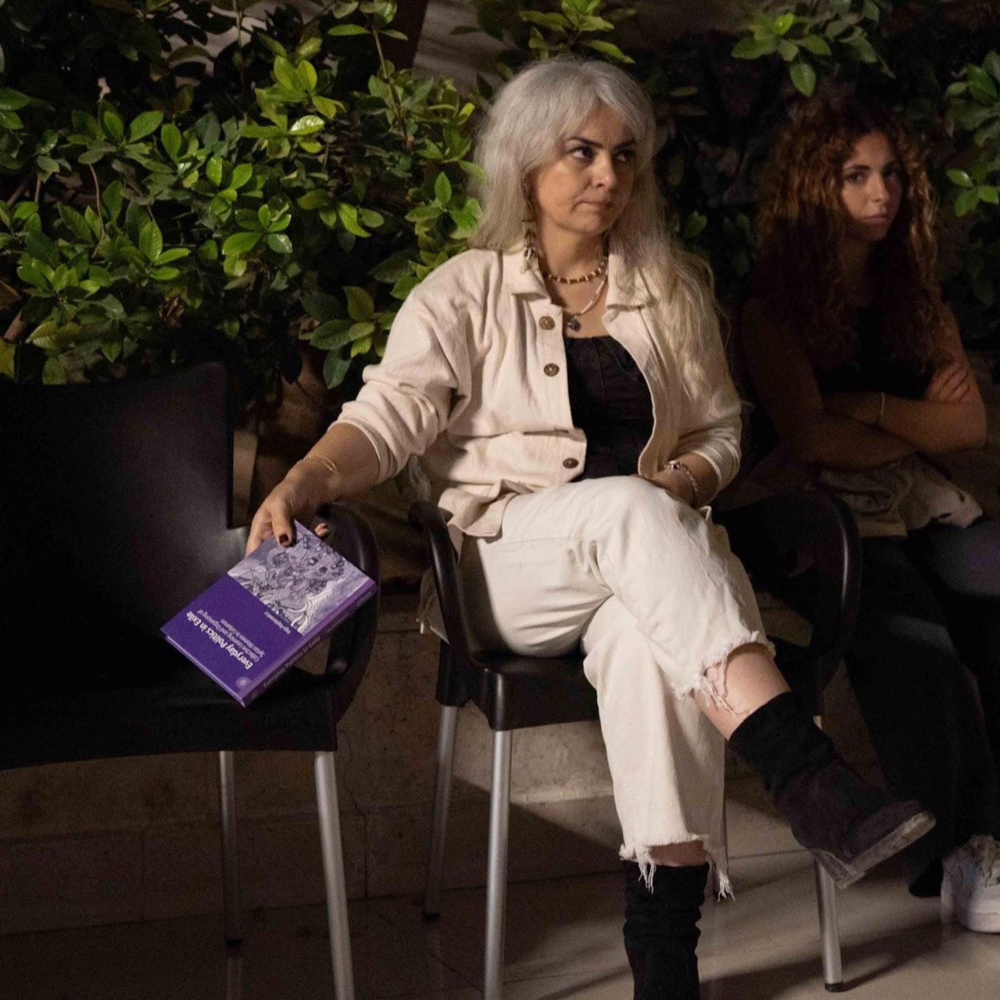

Houseمركز فكري في دمشق.



نجمع الناس حول مناقشات الكتب والندوات وعروض الأفلام، وحتى أمسيات الأسئلة العامة من حين إلى آخر.
بيت صدى منزل مشترك في حي المزرعة بدمشق، أسسته Syria Direct وSyria Civic.
هنا، يمكن لأشخاص من مهن وأجيال مختلفة أن يلتقوا ويتبادلوا الأفكار ويجدوا شركاء للتعاون.
وتتيح مكتبتنا للإعارة الكتب والصحف والمواد المرجعية لأي شخص في المدينة.
آخر أخبار بيت صدى
الفعاليات القادمة
فعاليات سابقة
لديك فكرة لبيت صدى؟
لاستضافة فعالية خاصة أو الاستفسار عن المساحة، راسلنا على info@syriadirect.org